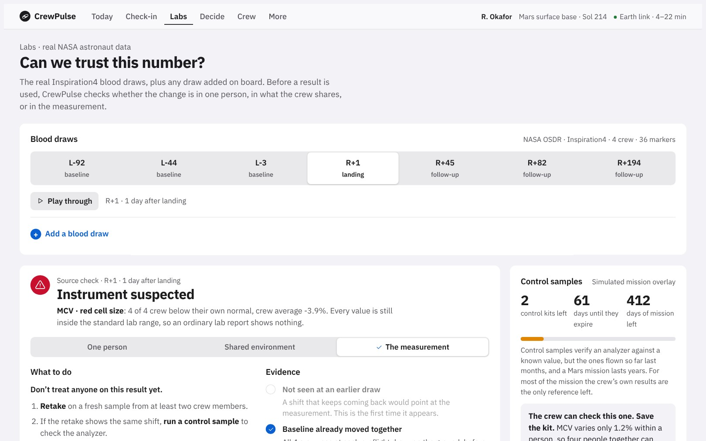
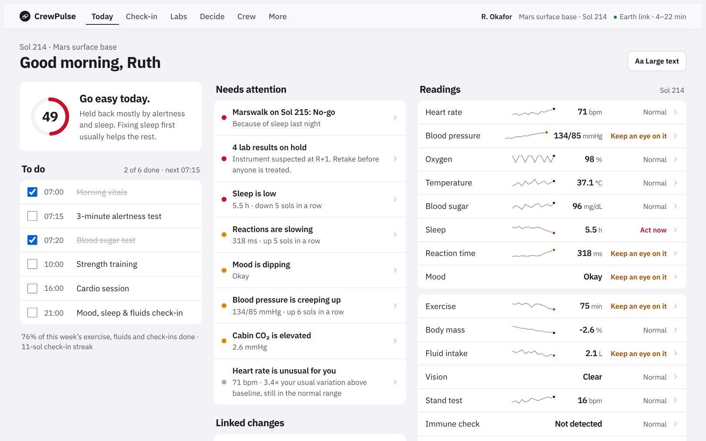
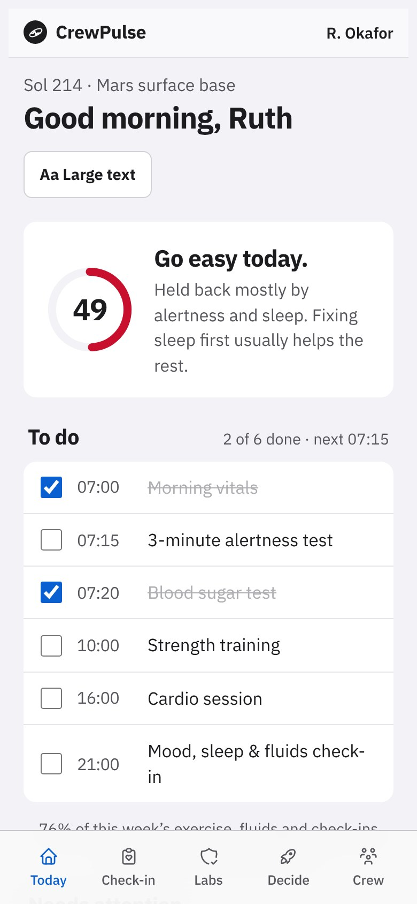
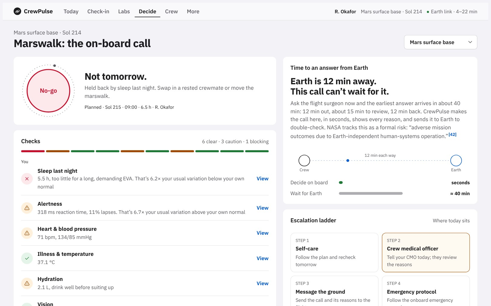

A health check-in for astronauts that also checks its own readings
On the way to Mars a crew can wait 40 minutes for a doctor’s answer, or two weeks. Quorum lets them make the call on board, and it questions a strange lab result before it lets anyone act on it.

The Labs screen on the real Inspiration4 blood draw from the day after landing.
The part we think is new
Every health tool we looked at assumes its numbers are right. On Earth a lab checks its analyzer with control samples and gets a recall notice when a batch is bad. A Mars crew has neither for most of the trip: the control solutions NASA flew with its white-cell analyzer last about three and a half months,1 and the mission lasts about three years. In April 2026 some lots of a handheld blood-analyzer cartridge were recalled for reading too high.2 In a communications blackout the crew would never hear about it.
So before Quorum reports a lab change as a health problem, it asks where the change is. If one person moved, it is probably that person. If the whole crew moved at once, it is something they share, or it is the instrument. Hospitals already use their patients’ results this way to catch analyzer drift.3 We adapted that to a crew of four.
What happened when we ran it on real data
NASA has published the blood tests from the four Inspiration4 crew: three draws before their three-day flight and four after.4 The day after landing, red-cell size was below every crew member’s own normal, though still inside the standard lab range.
Red-cell size (MCV, fL). Grey band: that person’s own normal from the three preflight draws. Red: outside it.
A tool that only compares people with their baseline would report four sick astronauts. Quorum reports one suspect instrument. Red-cell size had already crept up together at every preflight draw, none of the related red-cell markers moved, and the shift was still there six months after a three-day flight. Its advice is to retake before treating anyone.
The 45-day draw surprised us. Three of the four crew show blood sugar between 36 and 44 mg/dL, which read at face value is an emergency. Potassium went up in the same draw. That combination is what blood does when it sits too long before it is processed, so Quorum sets those two results aside and keeps the rest.
| Draw | Quorum says | What moved | Results it still trusts |
|---|---|---|---|
| 1 day after landing | Instrument suspected | Red-cell size, −3.9% | 136 of 143 |
| 45 days after | Sample handling suspected | Potassium +17.9%, glucose −31.7% | 127 of 142 |
| 82 days after | Instrument suspected | Red-cell size, −2.8% (still open) | 130 of 143 |
| 194 days after | Instrument suspected | Red-cell size, −4.6% | 127 of 142 |
We can’t prove either verdict. The public files don’t say which instrument was used or how the samples were handled, and a real change in the crew isn’t ruled out. What the check does is tell the crew which question to ask, and a retake answers it. It also only works for markers the body holds steady: four people can catch a 1.5% shift in red-cell size but would need about 22% for blood sugar. The numbers and the limits are on the evidence page.



Today on a computer and on a phone, and the on-board call. These screens run on a made-up crew member, Ruth Okafor.
What is real here
The blood results and everything computed from them are real, taken from NASA’s files without changes, and node test/test.js reproduces every number. Space-weather notices are read live from NASA. Ruth’s daily readings, the control-kit countdown and the messages to Earth are simulated, and the app says so wherever they appear. Nothing here is a medical device.
It is a static site with no server. Everything runs in the browser and is stored on the device, which is how it would have to work on board.
Team GOATS
Raleigh, North Carolina
Built for the 2026 NASA Space Apps Challenge, “Create Health Monitoring Software for Astronauts on Space Missions.” No NASA logos are used and no endorsement is implied.
We used Claude (Anthropic) as a coding and research assistant. The numbers come from NASA’s files and are checked by an automated test.